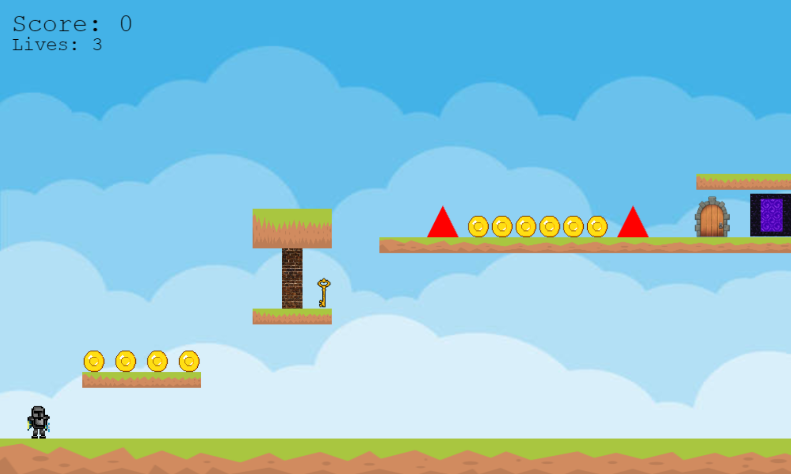

SEP11 Freedom Project
Context
I am a student at HSTAT in the Software Engineering Program. The "Freedom Project" for SEP11 is a year-long project all about making something using JavaScript along with a third-party JS tool. For my project, I chose to study Phaser in order to help me make a difficult platformer game with my Partner Xin Yu
Content
The Platformer Game consist of several levels made from scratch which means we didn't use any pre-made assets from Phaser rather we found our own assets online such as the platforms and sprites. Each level get progressively harder (look at the last level and you will understand). The game seems simple on the surface but it really is a game of dexterity and figuring out ways to beat it which is why the last level will leave many players frustrated. This frustration is common as our purpose is to create a challenging and engaging experience for players; to help with boredom since there are too many easy games that get boring quickly. The controls are straightforward: WASD Keys.
Map making took more time than coding the functionality of the game. We had to make sure the maps was beatable but still difficult for the player and even if many speculated that we used AI to design the maps, AI could never have the precision and creativity that we had to make the maps. We made our own hitboxes for the spikes and the delay for the death system which was a little AI-asisted as I didn't know how to add the delay upon death. This project was definitely required more hard-work and patience than I expected but it was a fun experience to learn Phaser and make a game with my partner Xin Yu.
Reflection
- A major struggle me and my partner faced was that we were trying to follow the project timeline while keeping up with other responsibilities in and out of school. So instead of bringing about a burn out, I came up with a plan for both of us to follow and that is we should learn the tools first before making the game. This approach works because it allowed us to have more control over the development process rather than learning while developing which isn't effective.
- Another struggle we faced was the lack of communication between us. During the Spring Break, the expectation/plan was to finish the MVP of the game over the break but we failed to communicate and instead we rushed the project a day before its due date. I will definitely try to improve communication in future projects with my partner, vice versa.
Link to the Blog Entry(s)
Link to the project
